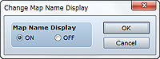
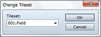
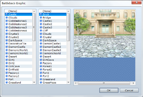
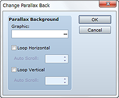
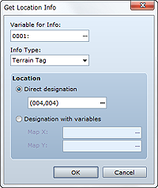

Controls whether a map name is displayed when moving to different map.
Select On to show the map name and Off to hide it.

Changes the tileset that was set for the map. Only maps on which you placed events are subject to this command.
Specify the tileset to which to change.

Changes the battle background that was set for the map. Only maps on which you placed events are subject to this command.
Specify the post-change background (left) and floor surface (right). You can check the graphic you specified in the preview area on the right side of the dialog box.
• If this command runs during a battle, the background will not change until the beginning of the next battle.

Changes the parallax background that was set for the map. Only maps on which you placed events are subject to this command.
Specify the graphic to which to change.
Selecting this option loops the graphic horizontally. Specify a speed value between -32 and 32 (0 to stop) in Auto Scroll to automatically scroll.
Selecting this option loops the graphic vertically. Specify a speed value between -32 and 32 (0 to stop) in Auto Scroll to automatically scroll.

Gets the value of a specific position on a map and assigns it to a variable. Only maps on which you placed events are subject to this command.
Specify the variable to which to assign the retrieved value.
Specify the kind of information to obtain.
Specify the location of target information. To specify a specific location, select Specify Directly, and then in the dialog box that opens when you click ..., specify the desired location. To specify a location using coordinates, select Specify with Variable, and then in the Map X and Map Y boxes, enter the coordinates for the information to obtain.